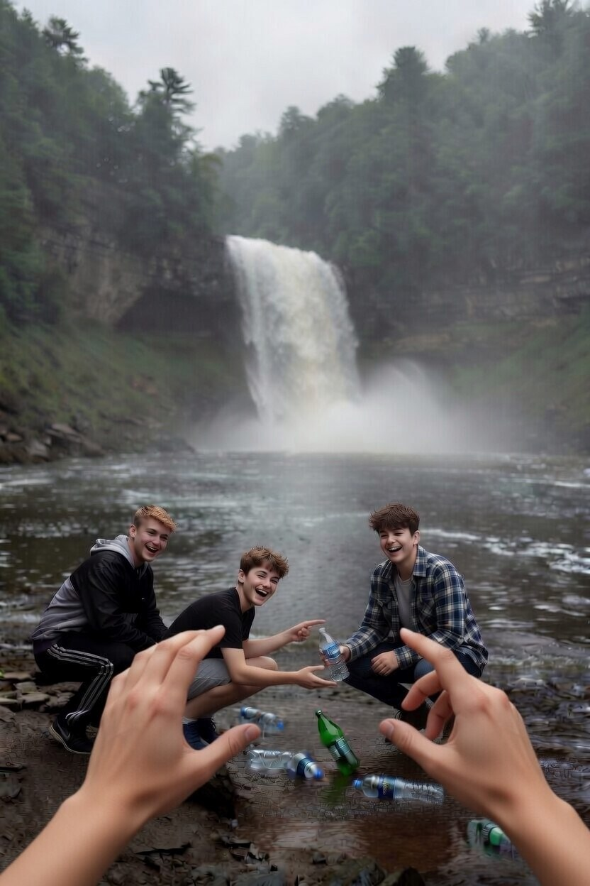
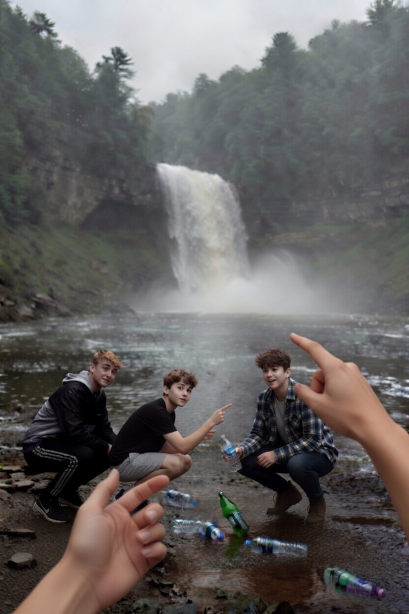

Вы приезжаете к знаменитому Чобручскому водопаду. Вода шумит, брызги летят в лицо. Красиво. Но на берегу вы видите троих подростков. Они запускают в воду пластиковые бутылки, пуская их «в плавание». «Смотри, как плывет! Кто дальше запустит?» — кричит один. Бутылки уплывают по течению. Вы знаете, что пластик не разлагается сотни лет. Он попадет в Днестр, потом в море. Рыбы могут его проглотить и погибнуть. Подростки замечают тебя. «Чего смотришь? Играем просто. Подумаешь, бутылки»

«Я тут часто рыбачу. В прошлом году поймал щуку, а у нее в желудке была пластиковая пробка. Рыба сдохла. Не хотите, чтобы так и дальше было?»

«Слушайте, я знаю тут одно место выше по течению, где водопад разбивает бутылки в мелкую крошку. Хотите, покажу, что будет с вашими бутылками через 10 минут?» --- Первый выбор зафиксирован. Какую ветку разбираем дальше?